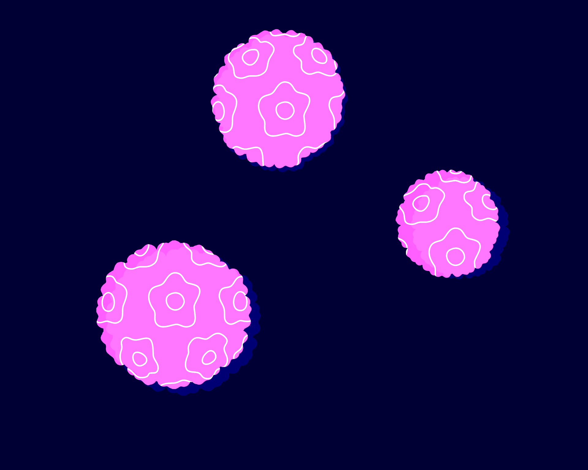

Pruebas de detección primarias en entornos de bajos recursos
Aunque el coste de una prueba de citología es esencialmente bajo,
mantener un programa basado en la citología requiere un gran
volumen de personal capacitado, pruebas frecuentes y
reevaluaciones de la población objetivo, lo cual es complejo y
costoso. En consecuencia, la introducción de programas basados en
citología ha fracasado, provocando una cobertura inadecuada y un
rendimiento deficiente de las pruebas.
Para superar algunos de estos problemas, la OMS recomienda usar
métodos de detección basados en el VPH en lugar de la citología o
la inspección visual con ácido acético (IVAA).
Existe un consenso generalizado de que la prueba del VPH es
superior a la citología como prueba de detección primaria. Sin
embargo, existen varios desafíos para una implementación más
generalizada:
Costes de pruebas y equipos.
Infraestructura de laboratorio.
Opción(es) en los puntos de atención.
Necesidad de opciones de cribado (debido a la baja
especificidad).
La OMS ha incluido las pruebas del VPH en su lista de dispositivos
médicos prioritarios para el tratamiento del cáncer. Para
garantizar que se adquieran y distribuyan productos de buena
calidad, los diagnósticos in vitro, como la prueba del VPH, pueden
someterse a un proceso de "precalificación'' sistemático de la OMS
para determinar la capacidad de un fabricante para producir un
producto de calidad constante según las normas internacionales y
las especificaciones de la OMS/UNFPA. En cuanto a las pruebas que
los fabricantes solicitaron para someterse al proceso, a finales
del 2020 se precalificaron tres [24]WHO | Public reports of WHO prequalified IVDs (HPV virological technologies).:
1
Kit de prueba CareHPV
(Qiagen, China en colaboración con CARE Inc, EE. UU.)
Desarrollado por CARE (Cooperative for Assistance and Relief
Everywhere, Inc.) para entornos con recursos limitados, fabricado
y comercializado por Qiagen GmbH. La prueba detecta 14 tipos de
VPH de alto riesgo y requiere alrededor de 2,5 horas de tiempo de
procesamiento. Para esta prueba, se necesita un técnico de
laboratorio capacitado, ya que se requieren varios pasos de
procesado manual para el procesamiento por lotes utilizando 96
placas de pocillos.
La prueba es una adaptación de la HC2. No requiere agua corriente,
aire acondicionado o una compleja infraestructura de laboratorio.
El proceso es relativamente fácil de aprender (aunque se han
notificado experiencias inconsistentes) y el coste esperado es de
alrededor de 5/7 euros.
No es una prueba de uso in situ, y se deben analizar 9 muestras
por lote para un procesamiento óptimo. En algunos entornos, se ha
notificado un porcentaje considerable de placas no válidas debido
a errores técnicos, cortes de energía o mal funcionamiento del
sistema de prueba. Ocasionalmente se ha observado contaminación de
pocillo a pocillo.
El ensayo careHPV cuenta con marca CE desde el 2010 y recibió la
precalificación de la OMS en el 2018. Se ha estado usando careHPV
en diferentes entornos como en China, Centroamérica, Burkina Faso
o Sudáfrica.
La sonda utilizada en la prueba de VPH HC2 para detectar tipos
de VPH de alto riesgo tiene cierta hibridación cruzada con los
tipos de VPH de bajo riesgo (es decir, falsos positivos). Al
ser una adaptación de la HC2, careHPV puede presentar las
mismas limitaciones [25]HC2 High-Risk HPV DNA TestTM - Package Insert..
2
Xpert HPV
(Cepheid,
EE. UU.)
Se trata de una prueba basada en cartuchos ejecutada en GeneXpert:
un sistema de PCR en tiempo real validado para el diagnóstico de
tuberculosis, el diagnóstico de VIH, la carga viral del VIH y la
carga viral del virus de la hepatitis C y otros.
La prueba se realiza en menos de una hora y pueden ser ejecutadas
en cualquiera de las plataformas GeneXpert de Cepheid, todas las
cuales requieren un suministro de electricidad fiable, y se operan
a través de un ordenador portátil o de escritorio. Detecta 14
tipos de VPH de alto riesgo, entre los cuales el VPH 16 y el VPH
18/45 son tipificados individualmente.
El ensayo Xpert HPV cuenta con marca CE desde el 2014 y recibió la
precalificación de la OMS en el 2017.
A pesar de sus numerosas ventajas, la principal desventaja de la
prueba es su elevado coste. También se han expresado
preocupaciones en cuanto a los residuos y su eliminación.
El valor de corte de positividad se puede adaptar para
aumentar la especificidad, especialmente relevante para las
mujeres VIH positivas, con una pequeña reducción en la
sensibilidad [26]Kuhn L, Saidu R, Boa R, Tergas A, Moodley J, Persing D, et al. Clinical evaluation of modifications to a human papillomavirus assay to optimise its utility for cervical cancer screening in low-resource settings: a diagnostic accuracy study..
3
Abbott RealTime High Risk HPV
Una prueba in vitro cualitativa basada en la PCR para detectar el
ADN de 14 genotipos del virus del papiloma humano (VPH) de alto
riesgo en muestras clínicas: 16, 18, 31, 33, 35, 39, 45, 51, 52,
56, 58, 59, 66 y 68. La prueba identifica específicamente los
genotipos 16 y 18 del VPH y al mismo tiempo detecta otros
genotipos de alto riesgo a niveles de infección clínicamente
relevantes. El ensayo Abbott RealTime High Risk HPV se utiliza
como prueba de referencia, y ha sido implementado tanto en
entornos de recursos altos como bajos.
Además de la precalificación de la OMS, la prueba ha sido validada
dentro del protocolo VALGENT. Sin embargo, es posible que el coste
de la prueba no sea adecuado para los PIBM.
Independientemente de la prueba de VPH utilizada, existe un número
considerable de mujeres con infección por VPH que nunca progresará
a cáncer de cuello uterino (especificidad subóptima). Es por ello
que se han propuesto varias estrategias de manejo clínico para
mujeres VPH positivas:

Tratar todos los casos positivos de VPH.
Aunque esta estrategia da como resultado un tratamiento
excesivo, está siendo implementada en algunos entornos
mediante un enfoque de detección y tratamiento en el mismo
día para garantizar el cumplimiento.
Ejecutar una segunda prueba para confirmar el precáncer
(prueba de cribado).
La información del genotipo, la citología de cuello uterino
y la IVAA son los métodos de cribado más comunes utilizados
en todo el mundo. Estas pruebas prometedoras incluyen una
tinción dual para p16/k68, detección de oncoproteínas E6/E7,
metilación y evaluación visual automatizada. Para obtener
más información sobre las opciones de cribado, consultar el
MÓDULO 5.